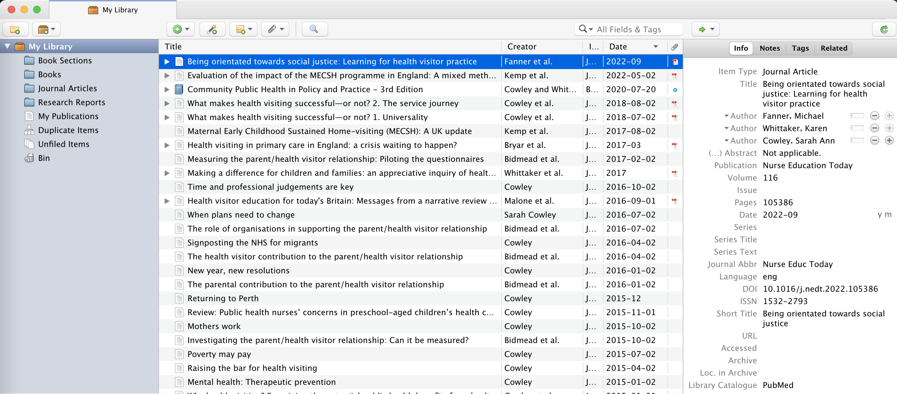

I was contacted out of the blue by Sarah Cowley who I'd met a while ago at a Euro Cafe. She was looking for advice about a website she'd had built for her by a local agency after being quoted £100+ just to maintain it and wanted to walk away from the deal to get help elsewhere. This led to a dispute with them and her being locked out of her half-finished site.
So I thought building her a new one would be a nice way to keep on top of my WordPress knowledge
The website needed to provide a complete record of all Sarah's academic output, and offer as much of this as free to download to users that have registered. Getting hold of academic papers is easier for people at Universities as they often get access to paid online libraries, with most other people having to searching Google Scholar or hunting around on the web for them.
The current site had displayed a sample number of documents using a carousel, but with no way to search or filter the content. I've got a long-standing hatred of carousels anyway so wanted the presentation of the papers to better meet what would be expected in academic circles.
It wasn't until later into the start of this I realised that there were over 200 documents to deal with that Sarah has produced during her (amazing) career! After she sent me the Word document with these listed I realised I needed to something more to help her organise a catalogue of her work to better manage and share it.
To keep the costs down as low as I could for her I got a hosted Wordpress package through Ionos with a decent 12-month offer. Next time I'll shop around some more as it turns out they don't support the use of Imagick on the server to generate PDF thumbnails.
Finding the right WordPress theme was a bit challenging. Again, to keep the costs as low as possible I didn't want to use a paid theme but adapt a free one. I decided on Agama Blue as being close enough to what I needed.
Looking around for a good plugin to manage and display the documents I found Document Library Pro which looked spot on, but was $129 a year to use! Far too expensive for this project. Eventually I came across teachPress which offers a number of useful features for presenting documents and the ability to import document details using BibTex citations like this:
@book{campbell_weights_1995,
title = {Weights and {Measures}: {Outcomes} and {Evaluation} in {Health} {Visiting}},
isbn = {978-1-872278-30-8},
shorttitle = {Weights and {Measures}},
language = {English},
publisher = {Community Practitioners' \& Health Visitors' Association},
author = {Campbell, Fiona and Cowley, Sarah},
month = oct,
year = {1995},
}I started adding these manually one document at a time using Researchgate as a source but it soon became clear that I needed a better tool than Wordpress to manage this.
I got some great advice from digital folk on what I could use, and decided on Zotero as the tool to use. With its accompanying Chrome extension to magically grab BibTex from documents, and download any associated PDFs, I was soon steaming along and making headway into the 200+ number
Zotero also provided an online library to share progress, which meant I could hand this over as a tool at the end of the project for maintaining this catalogue too
While teachPress has been brilliant for taking the legwork out of providing the front end, there's a number of drawbacks:
I've not been able to persuade Ionos that leaving out optional modules on a default WordPress install is something they should rectify. I had to find the GS Only PDF Preview plugin to generate the thumbnails I needed
The trickier stuff has been less about the tech and more about tracking down PDFs of all the documents I need. I managed about 45% in the end